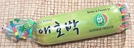

Korean Squash / Hobak
Two varieties of Korean Squash are now available in North America
(at least here in Southern California). The elongated
Aehobak is by far the most available, so we are giving it priority
in the details The spherical Put Hobak is pretty much
interchangeable with it.
Aehobak / Korean "Zucchini"
[Aehobak (Korea, lit Baby Squash); C. moschata]
This squash, very popular in Korea, is actually a "winter squash", but is
eaten immature, as if a summer squash. It is often called "Korean Zucchini",
but color, taste, and texture are significantly different from Zucchini.
They are juicier, slightly sweet, and taste lightly of Butternut or Acorn
Squash. They are quite edible raw, but are usually cooked in Korea. They are
also sliced and dried (maleun hobak or hobak-gogi). these slices
are soaked before cooking.
These are now grown commercially in Mexico, and packaged in shrink-on
plastic tubes.The photo specimens were 10.5 ounces, 7 inches long and 2
inches diameter.
More on Squash.
Buying:
These are available only in Korean markets, or perhaps
from a Korean grower at a farmer's market. In the markets they are easily
identified by being packaged in a tight plastic sleeve. The photo specimens
were purchased from a Korean market in Los Angeles (La Cañada) for 2021
US $2.99 each.
Prep:
These are never peeled, just sliced or diced as directed
by the recipe.
Cooking:
Cooking should be minimal, by steaming,
frying, or including in stews. Here are times in boiling water:
- 2 minutes: Between raw and cooked taste.
- 4 minutes: Fully cooked, still with a good amount of crunch.
- 6 minutes: Still a little crunch at the outside edge, seed mass
very soft.
- 10 minutes: No crunch, seed mass very soft, starting to break up.
- 15 minutes; Seed mass is starting to fall apart.

Put Hobak / Korean Green Ball
[Put Hobak (Korean); Early Bulam (Korea); Green Ball,
Avocado Squash; C. moschata]
This is actually a "winter squash", but it is generally eaten immature,
as if a summer squash. In this state it is firmer and sweeter than
Zucchini, They grow up to about 4 inches in diameter and may be spherical
or sort of avocado shaped. They are also edible as a winter squash.
This squash is fairly interchangeable with the Aehobak, or
"Korean Zucchini".
More on Squash.
Buying:
Even in the Korean markets here in Southern California,
these are strictly a "buy it when you see it", because they are not often
available. The photo specimens, a little over 3 inches diameter and weighing
9 ounces each, were purchased from a Korean market in Los Angeles
(La Cañada) for 2019 US $2.99 / pound. The store did have some up to
about 4 inches diameter.
Prep:
These are never peeled, just sliced or diced as directed
by the recipe.
Cooking:
See instructions for
Aehobak above.
sq_hobakz 210206 - www.clovegarden.com
© Andrew Grygus 2011 - agryg@clovegarden.com -
Photos on this page not otherwise credited are ©
cg1.
Linking to and non-commercial use of this page permitted.